도로 조우 · 생성 부품 비교
달구지와 같은 결
차도, 시설도, 옆에 선 사람도 같은 질감으로.
정차 직전 비율 예시 · 달구지 크기는 고정
현재 양산 저장 화면이나 실제 접근 연출의 캡처는 아니에요.
판매대가 사람의 허리 높이에
초소와 사람의 바닥을 맞추기
낡은 천막 아래의 작은 상점
길가에 남은 주유 설비
우편 가방을 실은 자전거
재질 확대기존 생성 커피차 옆에 새로 생성한 주인을 놓았어. 옷 주름·손짓·신발까지 배경 없는 한 부품이고, 도형으로 만든 사람은 제안에서 뺐어.
초소와 검문 인물도 정본을 참조해 각각 생성했어. 차단봉은 기존 생성 부품이야. 모든 사건에 초소나 사람이 추가되는 건 아니야.
손수레와 천막을 새로 생성했어. 옆 인물은 크기 비교용 익명 상인이며 실제 사건의 인물 확정은 아니야.
주유기·호스·연료통을 한 투명 부품으로 생성했어. 사람이 없는 시설에는 억지로 인물을 추가하지 않아.
공식 초상의 얼굴과 조끼를 이어 전신 우편부를 생성했어. 자전거 바퀴와 발바닥을 같은 바닥에 맞췄고 실제 사건 연결은 검토 후 진행해.
실제 게임에는 어떻게 들어가?
차량·시설·사람을 분리해 기존 캔버스에 그려. 발견 → 감속 → 정차 → 사건 화면의 흐름은 유지해. 움직이는 도로에 사건 삽화나 큰 사진을 덮지 않아.
조우 차량은 달구지 폭의 약 52%, 성인은 바퀴와 같은 바닥에 서고 판매대는 허리~가슴 높이에 맞춰. 이전의 차체 높이 절반 기준은 폐기했어. 새 인물은 이름 없는 비교용이며 실제 사건에 필요한 인원만 연결할 예정이야.
정본4장과 실제 달구지 부품을 참조한 생성 이미지야. 큰 원본과 투명 WebP를 따로 보존했어. SVG는 배치와 기존 표현 비교에만 써. 실제 캔버스 픽셀 렌더링·날씨·밤·움직임은 아직 검증하지 않았어.
길에서 만날 사람들
전신 생성 부품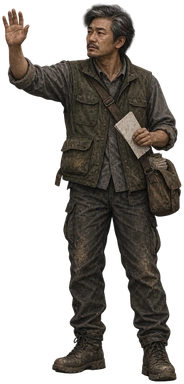
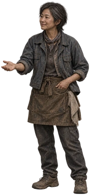
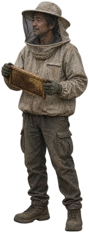
우편부는 기존 공식 초상, 양봉가는 실제 사건의 방충망·벌집을 기준으로 만들었어. 여성 상인은 새 외형 제안이며 본문에 사내와 아이가 나오는 ‘리어카 행상’을 대신하지 않아. 모두 게임에는 아직 미적용이야.
추가 조우 인물과 차량
v5 · 게임 연결 준비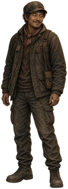
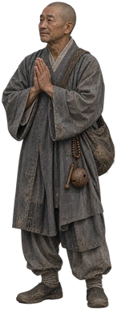
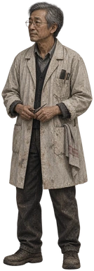
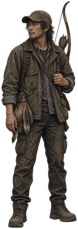
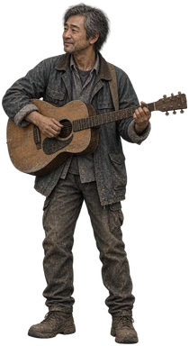
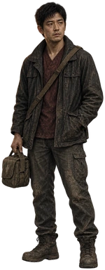
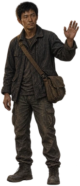
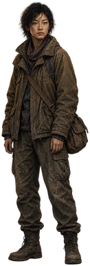
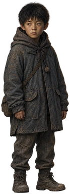
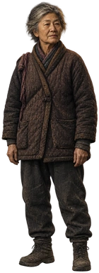
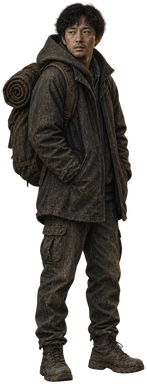
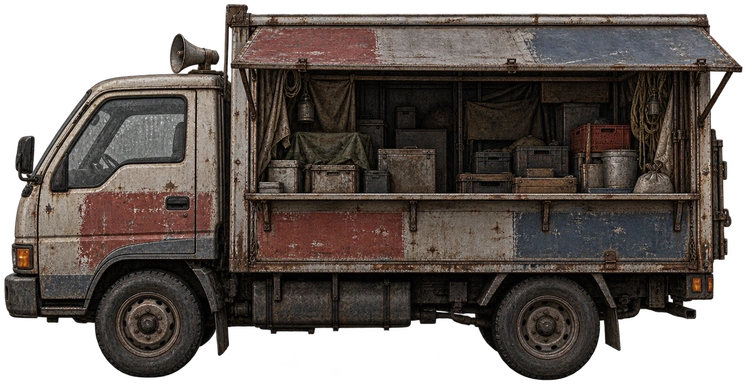
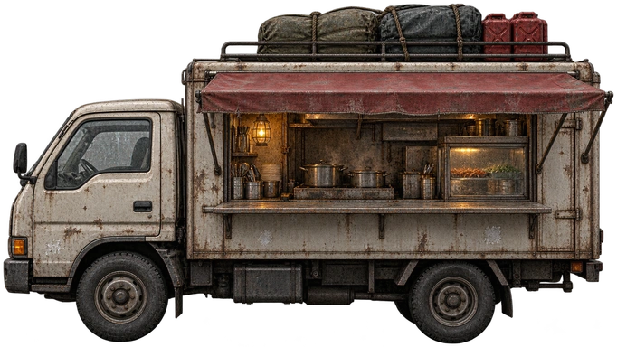
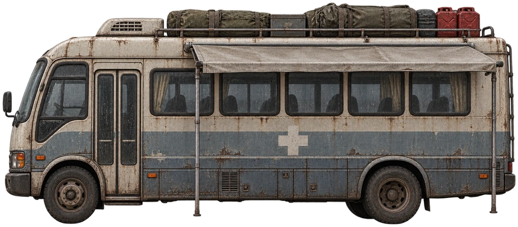
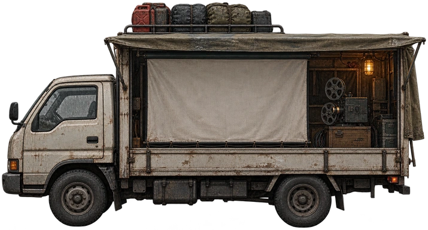
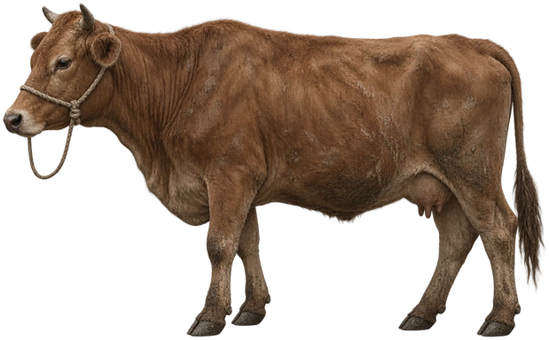
만수는 공식 초상, 스님·이발사·사냥꾼은 사건의 복장과 소품을 참조했어. 연주자는 레오가 아닌 익명 인물이야. 차량에 사람을 굽지 않고 실제 사건 인원을 따로 배치해. 실제 접근 화면 검수와 적용은 대기 중이야.
전용 얼굴과 사건의 도구
v6 · 적용 준비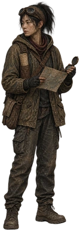
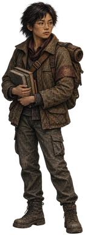
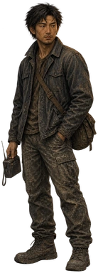
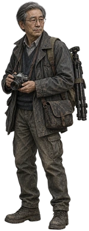
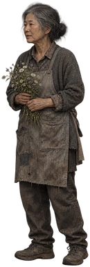
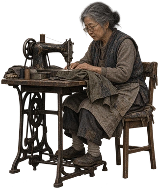
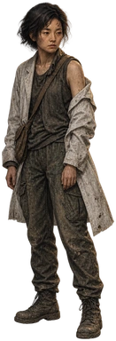
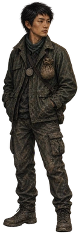
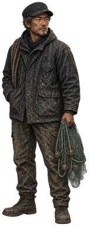
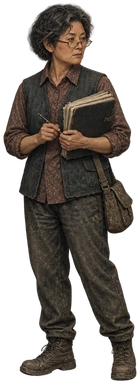
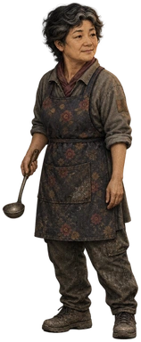
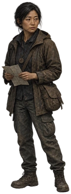
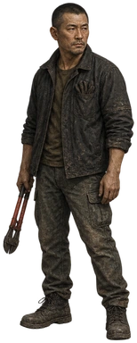
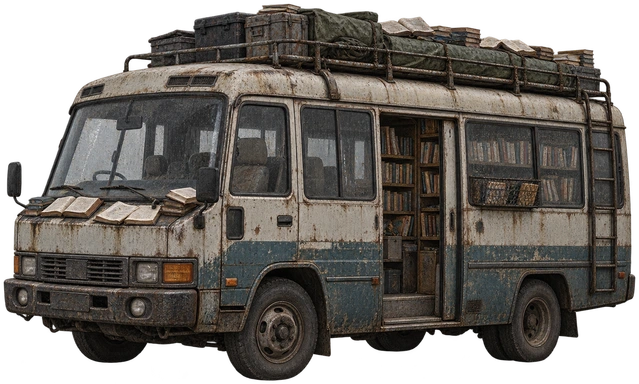
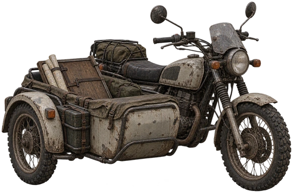
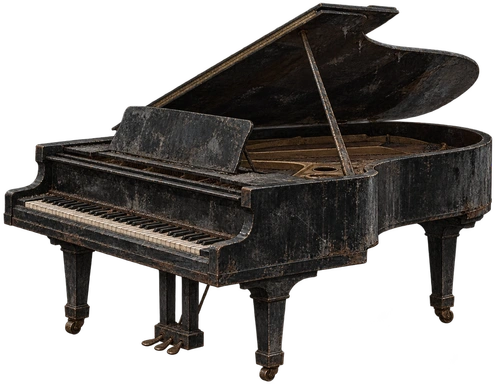
이름 있는 인물은 공식 초상을 참조했어. 무전 목소리나 회상 속 인물을 도로에 자동 배치하지 않아. 현재 Studio 장면 연결 오류로 실제 도로·밤·날씨 검수와 적용 확인은 미완료야.